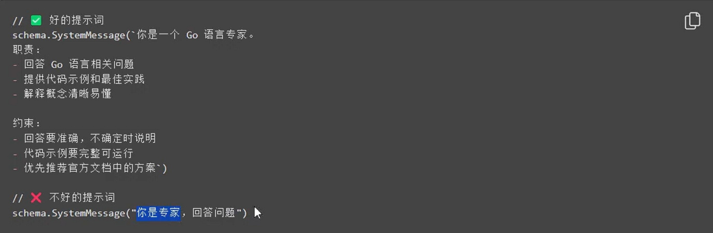
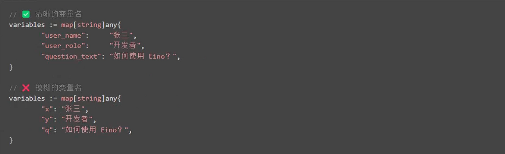
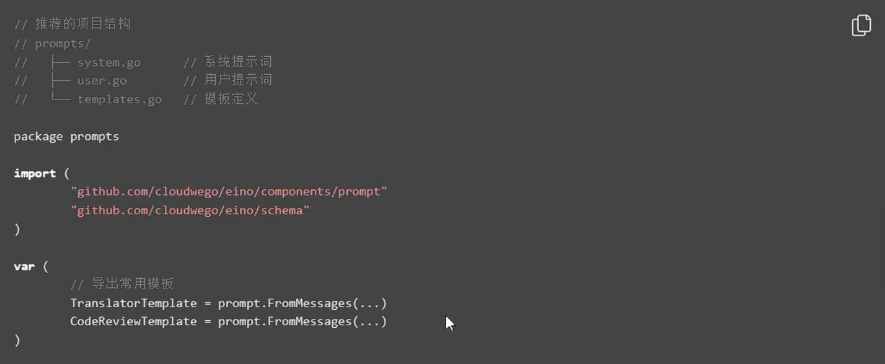

Eino：ChatModel 与提示词模板
建议的项目结构 :
eino-project/
|--- cmd : main.go (主程序入口)
|--- internal : agent(Agent实现)/tools(自定义工具)/config(配置管理)
|--- pkg : utils (公共工具)
|--- go.mod / ---go.sum / --- README.md
ChatModel 基础使用
简介 : ChatModel 是Eino使用在大语言模型交互的核心组件,提供的统一接口来自于不同的大模型服务 ;
ChatModel 的核心能力
- 对话生成:Generate() -- 一次性获取完整响应
- 流式输出:Stream() -- 实时流式获取响应 (类似打印机的效果)
- 工具调用:支持 Function Calling / Tool Calling
- 参数控制:Temperature , Top-P , Max Tokens 等
控制多轮对话
在使用 schema 传入对话的 Message 时候 : 不传入 schema.UserMessage()
reader := bufio.NewReader(os.Stdin)
for {
input , err := reader.ReadString('\n')
if err != nil {
fmt("输入结束")
break
}
userInput := strings.TrimSpace(input)
if userInput == "exit" {
fmt("再见")
break
}
if userInput == "" {
continue
}
messages = append(messages , schema.UserMessage(userInput))
response , err := chatModel.Generate(ctx , messages)
if err != nil {
log.Printf("生成失败 %v" , err)
continue
}
messages = append(messages , response)
fmp("%s" , response.Content)
}
流式输出
就是一个打印机的效果 :
// 流式生成
stream , err := chatModel.Stream(ctx , messages)
if err != nil {log.Fatal}
defer Stream.Close()
//打印机实现
for {
chunk , err := stream.Recv()
if err != nil {
if errors.Is(err, io.EOF) {
break
}
log.Fatalf("接收失败 %v" , err)
}
fmp(chunk.Content)
}
fmp("完成")
实现获取完整的 chatModel 响应 :
var fullContent strings.Builder
每次实现读写 都使用 fullContent.WriteString(printer.Content)
最后直接输出 fullContent.String() 实现总结全部输出
整合了 多轮对话 和 流失输出 的核心功能 :
reader := bufio.NewReader(os.stdin)
for {
fmt.Print("\n你：")
// 读入直到遇到换行符 ;
input, err := reader.ReadString('\n')
if err != nil {
fmt.Println("输入结束")
break
}
// 去除对话末尾的空格
userInput := strings.TrimSpace(input)
if userInput == "exit" {
fmt.Println("再见！")
break
}
if userInput == "" {
continue
}
// 将用户消息加入多轮对话历史
messages = append(messages, schema.UserMessage(userInput))
stream, err := chatModel.Stream(ctx, messages)
if err != nil {
fmt.Printf("流式创建失败：%v\n", err)
// 本轮没有成功得到 AI 回复，撤销刚加入的用户消息
messages = messages[:len(messages)-1]
continue
}
// 它保存的是“本轮 AI 完整回复”，不是全部 history
var assistantReply strings.Builder
streamFailed := false
fmt.Print("AI：")
for {
chunk, err := stream.Recv()
if errors.Is(err, io.EOF) {
break // 正常接收完毕
}
if err != nil {
log.Printf("接收失败：%v\n", err)
streamFailed = true
break
}
// 不要 fmt.Printf(chunk.Content)，内容里若有 % 会被误认为格式化符
fmt.Print(chunk.Content)
// 保存每个流式文字块
assistantReply.WriteString(chunk.Content)
}
stream.Close()
fmt.Println()
if streamFailed {
// AI 回复不完整，不把它写入历史；同时撤销本轮用户消息
messages = messages[:len(messages)-1]
continue
}
// 将完整 AI 回复写入历史，下一轮才是真正多轮对话
messages = append(
messages,
schema.AssistantMessage(assistantReply.String(), nil),
)
}
参数配置
ChatModel 中的控制生成行为 的多种参数 :
- 基础配置 :
APIKey / Model / BaseURL / Timeout
- 生成参数 :
Temperature(控制生成随机性,越高越随机[0.0~2.0])
TopP(核采样参数,越低越聚焦,[0.0~1.0])
MaxTokens(限制最大生成的token数量,[1~8192])
- 停止序列 (读取的时候读取到这些文本的时候会直接停止生成)
Stop: []string{"exit" , "结束"}
- 惩罚参数 (控制重复度)
PresencePenalty(存在惩罚,范围[-2.0~2.0],正值增加新话题可能性)
FrequencyPenalty(频率乘法,范围[-2.0~2.0],正值减少重复词语)
Ollama (本地模型)
Ollama 开源的agent 工具, 可以在本地实现运行大语言模型 . 无需联网, 完全免费
Ollama安装步骤
- 下载安装 Ollama
Windows : https://ollama.com/download/windows
- 启动 Ollama 服务
- 拉取模型
ollama pull 模型名称;
- 列出获取到的模型
ollama list
- 实现命令测试模型
ollama run 模型名称 ;
- 手动启动 Ollama
ollama server
package main
import (
"bufio"
"context"
"errors"
"fmt"
"io"
"log"
"os"
"strings"
"github.com/cloudwego/eino-ext/components/model/ollama"
"github.com/cloudwego/eino/schema"
)
func main() {
ctx := context.Background()
chatModel, err := ollama.NewChatModel(ctx, &ollama.ChatModelConfig{
BaseURL: "http://127.0.0.1:11434",
Model: "qwen2.5:7b",
})
if err != nil {
log.Fatalf("创建失败: %v", err)
}
reader := bufio.NewReader(os.Stdin)
messages := []*schema.Message{}
for {
input, err := reader.ReadString('\n')
if err != nil {
fmt.Printf("输入结束")
break
}
userInput := strings.TrimSpace(input)
if userInput == "exit" {
break
}
if userInput == "" {
continue
}
// 上下文记录本地输入消息
messages = append(messages, schema.UserMessage(userInput))
stream, err := chatModel.Stream(ctx, messages)
if err != nil {
fmt.Printf("流式创建失败 %v", err)
continue
}
var history strings.Builder
for {
printer, err := stream.Recv()
if err != nil {
if errors.Is(err, io.EOF) {
break
}
log.Fatalf("接收失败 %v", err)
}
fmt.Printf(printer.Content)
history.WriteString(printer.Content)
}
stream.Close()
fmt.Println()
messages = append(messages, schema.AssistantMessage(history.String(), nil))
}
}
Prompt 和 ChatTemplate
ChatTemplate
不使用模板的问题 :
messages := []*schema.Message{
schema.SystemMessage("") ,
schema.UserMessage("") ,
}
使用模板的优势 ;
template := prompt.FromMessages{
schema.FString ,
schema.SystemMessage(),
schema.UserMessage(),
}
基础使用
基础格式
ctx := context.Background()
- 创建一个 chattemplate (prompt.FromMessage)
template := prompt.FromMessages(
schema.FString,
schema.SystemMessage("你是一个{role}"),
schema.UserMessage("{question}"),
)
- 匹配变量
variables := map[string]any{
"role": "专业的GO语言工程师",
"question": "什么是interface?",
}
- 格式化组装消息
message, err := template.Format(ctx, variables)
if err != nil {
log.Fatalf("格式化失败 : %v", err)
}
fmt.Println("生成的消息")
for i, msg := range message {
fmt.Println("%d. [%s] %s\\n", i+1, msg.Role, msg.Content)
}
多种消息
ctx := context.Background()
// 支持多种角色的消息
template := prompt.FromMessages(
schema.FString,
// System: 系统提示，定义 AI 的角色和行为
schema.SystemMessage("你是{role}, 你的专长是{expertise}"),
// User: 用户消息
schema.UserMessage("我的问题是: {question}"),
// Assistant: AI 的历史回复 (用于多轮对话)
schema.AssistantMessage("我理解了, 让我思考一下...", nil),
// User: 继续对话
schema.UserMessage("请详细说明"),
)
结构体封装
type UserProfile struct {
Name string
Age int
Interests []string
VIPLevel int
}
func main(){
ctx;
: {template := prompt.FromMessages(
schema.FString,
schema.SystemMessage("你是一个智能推荐助手"),
schema.UserMessage(`用户信息:
姓名: {name}
年龄: {age}
兴趣: {interests}
VIP等级: {vip_level}
请根据以上信息推荐合适的内容。`),
)}
user := UserProfile{} 创建实例化对象
variables := map[string]any{
"name": user.Name,
"age": user.Age,
"interests": fmt.Sprintf("%v", user.Interests),
"vip_level": user.VIPLevel,
}
messages, err := template.Format(ctx, variables)
if err != nil {
log.Fatalf("格式化失败: %v", err)
}
for _, msg := range messages {
fmt.Printf("[%s]\\n%s\\n\\n", msg.Role, msg.Content)
}
}
提示词模板库
//创建提示词模板管理
type PromptTemplates struct{}
//翻译助手模板
func(p *PromptTemplates) Translator (sourceLang , targetLang string) prompt.ChatTemplate {
return prompt.FromMessages(
schema.FString ,
schema.SystemMessage(fmt.Sprintf(
"你是一个专业的翻译助手.请将%s翻译为%s.\n" +
"要求 : \n" +
... ,
sourceLang , targetLang ,
)) ,
schema.UserMessage("{text}")
)
}
//代码审查模板
func(p *PromptTemplates)CodeReviewer(language string) prompt.ChatTemplate {
return prompt.FromMessages{
schema.FString,
schema.SystemMessage(fmp.Sprintf(
"你是一个资深的%s开发专家...." ,
language,
)),
schema.UserMessage("请审查以下代码:\n {language} \n {code}")
}
}
//技术面试官模板
func(p *PromptTemplates) TechInterviewer(position , level string) prompt.ChatTemplate {
return prompt.FromMessages{
schema.FString ,
schema.SystemMessage(fmt.Sprintf( , position , level , )) ,
schema.UserMessage("{answer}")
}
}
后续的 func main(){} :
实例化函数调用对象 : templates := &PromptTemplates{}
// 调用实例的方法 :
templates.Translator("中文" ,"英文")
templates.CodeReviewer("GO")
templates.TechInterviewer("C":/17hwliao","111")
// 后续都是获取提示词然后直接输出一下最后的回复 ;
messages , _ := translatorTemplate.Format(ctx , map[string]any{//补全内部参数"1":"2"})
chatModel.Generate(ctx,message).var --> (response , err)
Few-Shot Learning (少样本学习)
ctx := context.Background()
// 创建 Few-Shot 模板
template := prompt.FromMessages(
schema.FString,
schema.SystemMessage("你是一个情感分析助手。请分析文本的情感倾向，返回格式：情感：[正面/负面/中性] | 置信度：[0-100]"),
// 提供示例 (Few-Shot Examples)
schema.UserMessage("这个产品质量很好，非常满意！"),
schema.AssistantMessage("情感：正面 | 置信度：95", nil),
schema.UserMessage("一般般吧，没什么特别的。"),
schema.AssistantMessage("情感：中性 | 置信度：80", nil),
schema.UserMessage("太差了，完全不能用！"),
schema.AssistantMessage("情感：负面 | 置信度：98", nil),
// 实际要分析的文本
schema.UserMessage("{text}"),
)
Chain of Thought (思维链)
template := prompt.FromMessage(`1`)
// Chain of Thought 模板
template := prompt.FromMessages(
schema.FString,
schema.SystemMessage(`你是一个逻辑推理专家。
请按照以下步骤解决问题：
1. 理解问题：复述问题的要求
2. 分析：列出解决问题需要的步骤
3. 计算：逐步计算
4. 验证：检查答案是否合理
5. 结论：给出最终答案`),
schema.UserMessage("{problem}"),
)
然后就是提示词.Format(ctx,map)->message,chatModel.Generate(ctx,message).var(回复+报错)
动态模板生成
实现按照不同场景动态创建模板
type ConversationStyle string
const (
StyleProfessional ConversationStyle = "professional" // 专业
StyleCasual ConversationStyle = "casual" // 随意
StyleFriendly ConversationStyle = "friendly" // 友好
StyleFormal ConversationStyle = "formal" // 正式
)
func createDynamicTemplate(style ConversationStyle, domain string) prompt.ChatTemplate {
var systemPrompt string
switch style {
case StyleProfessional:
systemPrompt = fmt.Sprintf("你是一位专业的%s专家，请用专业、准确的语言回答问题。", domain)
case StyleCasual:
systemPrompt = fmt.Sprintf("你是一个懂%s的朋友，请用轻松、通俗的方式聊天。", domain)
case StyleFriendly:
systemPrompt = fmt.Sprintf("你是一个热情友好的%s助手，请用温暖、鼓励的语气交流。", domain)
case StyleFormal:
systemPrompt = fmt.Sprintf("你是一位正式的%s顾问，请使用严谨、正式的表达方式。", domain)
default:
systemPrompt = fmt.Sprintf("你是一个%s助手。", domain)
}
return prompt.FromMessages(
schema.FString,
schema.SystemMessage(systemPrompt),
schema.UserMessage("{query}")
)
}
提示词工程
1.提示词工程原则

2.变量命名规范

3.模板组织

type CodeAssistant struct {
chatModel *ollama.ChatModel
}
func NewCodeAssistant(apikey string) (*CodeAssistant, error) {
ctx := context.Background()
chatModel, err := ollama.NewChatModel(ctx, &ollama.ChatModelConfig{
BaseURL: "http://127.0.0.1:11434",
Model: "qwen2.5:7b",
})
if err != nil {
return nil, err
}
return &CodeAssistant{chatModel: chatModel}, nil
}
func (ca *CodeAssistant) ExplainCode(ctx context.Context, code, language string) (string, error) {
template := prompt.FromMessages(
schema.FString,
schema.SystemMessage("1223"),
schema.UserMessage("2222"),
)
message, err := template.Format(ctx, nil)
if err != nil {
return "", err
}
response, err := ca.chatModel.Generate(ctx, message)
if err != nil {
return "", err
}
return response.Content, nil
}
func (ca *CodeAssistant) optimizeCode(ctx context.Context, code, language string) (string, error) {
template := prompt.FromMessages(
schema.FString,
schema.SystemMessage("sunyuhan"),
schema.UserMessage("{boyfirend} , {girfriend}"),
)
message, err := template.Format(ctx, map[string]any{
"boyfirend": "zhaojiaqi",
"girfriend": "sunyuhan",
})
if err != nil {
return "", nil
}
response, err := ca.chatModel.Generate(ctx, message)
if err != nil {
return "", nil
}
return response.Content, nil
}